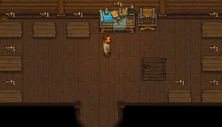
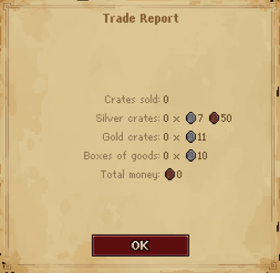

Trade Office
| Trade Office | |
|---|---|
 | |
Location information
| |
Buildable
|
True |
Exits
|
Village |

The Trade Office is located south of the tavern. The entrance is behind the merchant who visits on  . The merchant will visit at sunset to take
. The merchant will visit at sunset to take
crates from the pallets.
The entrance from the village and the hatch from the cellar are both closed, until you complete the merchant's quest "Trade License".
Workbench
Here, you are able to build crate pallets and marketing campaigns. You need to run a
marketing campaign first, to gain the 1×
Fame for each
crate pallet you want to build (up to 10 are possible). You can put
crates on crate pallets to sell them.
| Icon | Materials Required | Energy | Notes |
|---|---|---|---|

|
6× Flitch 1× Fame |
none | It's possible to build up to 10 crate pallets. |

|
10× Flyer |
Each campaign adds 1× Fame. |
Trade Report


The trade report details the money you've earned selling your crates of produce. Silver-star, gold-star, and trade goods crates always sell for the same prices, regardless of what produce is packaged for sale. Though the Merchant states that Fame will increase the prices that the crates will be sold for, they have a hard limit and increasing Fame provides no benefits. In the later patches (last checked on 27/03/2025) the price of crates has been increased from the get-go, with silver-star crates going for 10s 75c, gold-star for 16s 50c and boxes of goods for 15s each.
| |||||